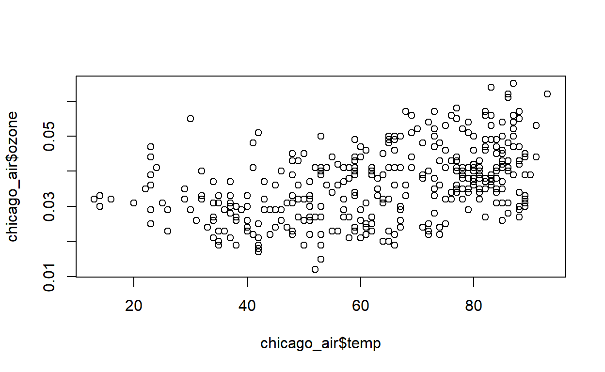
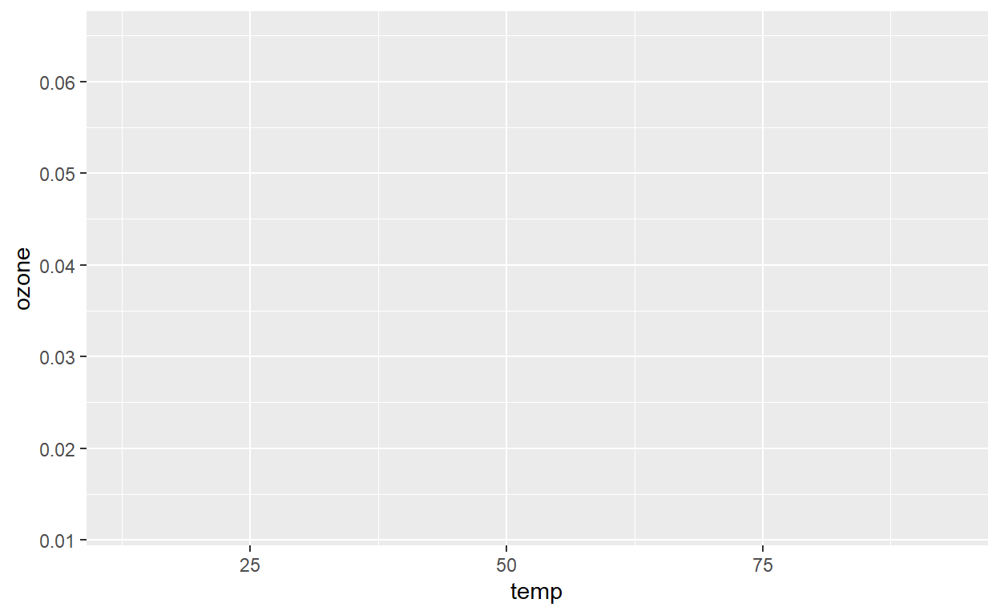

In this lesson you will first learn how to quickly visualize data
using a few base plotting functions. The rest of the material explains
how to use the ggplot2 package to build more complicated,
multi-faceted plots. The ggplot2 package is a powerful
Prerequisites
This lesson assumes you are familiar with the material in the lesson
on Subsetting,
Sorting, and Combining Data Frames. It also uses functions from the
ggplot2 package which needs to be installed.
install.packages("ggplot2")The example data for the exercises is available from this package. To
load the chicago_air data frame we will be using in the
lesson, simply use the data() function.
data(chicago_air)Base Plots
The most basic way to visualize data in R is the plot()
function. A numeric vector will be displayed on the y-axis of a
coordinate graph, with the index number of the vector taking the x-axis
values.
benzene <- c(1.3, 4.5, 2.6, 3.4, 6.4)
plot(benzene)A second vector can be supplied for the scatter plot, and you can
control which vector is printed on the x-axis and which is printed on
the y-axis. Below we use the chicago_air data frame to
create a scatterplot of temperature on the x-axis and ozone on the
y-axis.
plot(x = chicago_air$temp, y = chicago_air$ozone)
To see data plotted over time, we need to convert the
date column to a Date data type.
chicago_air$date <- as.Date(chicago_air$date)Here is ozone plotted by day as a line graph.
plot(x = chicago_air$date, y = chicago_air$ozone, type = 'l')The type argument controls the type of plot, and there
are many other arguments to control the look of the graph. The plot
below demonstrates a few of these options. Run ?plot to see
a list of all the arguments in the help file.
plot(x = chicago_air$date, y = chicago_air$ozone,
type='l',
pch = 16,
col = "purple",
lwd = 2.5,
xlab = "Date",
ylab = 'Ozone (ppm)',
main = 'Chicago Ozone Data')Histogram
Another base plot function is hist(). It’s used to
visualize the distribution of a data set as a histogram. Below is the
default output of the ozone data from the chicago_air data
frame.
hist(chicago_air$ozone)We can control the number of bars in the plot, or where the
breakpoints are for each bar, with the breaks argument. For
example, supplying breaks = 20 will make a histogram with
20 bars. Other arguments allow you to control the titles and colors of
the plot. Run ?hist to see a complete list of arguments on
the help page.
hist(chicago_air$ozone,
breaks = 20,
main = "Histogram of Ozone",
xlab = "ppm",
col = "steelblue")Box Plot
Another good way to visualize the distribution of a data set is the
box plot. The base function boxplot() takes either a vector
or a data frame in the data argument. If a data frame is
used, then the columns can be referenced without the $
operator, and a formula must be used.
boxplot(chicago_air$ozone)The box shows the interquartile range (IQR), with the bold line indicating the median of the ozone values. The horizontal lines at the end of the dotted lines are the min and max ozone values within a certain range from the box (specifically, 1.5 times the IQR). If a value falls outside that range, it will be represented by a point (the default point type is a circle). Overall, the plot gives an idea of where the middle half of the values are, and if there are extreme values on either side of the distribution.
The benefit of supplying a data frame to the data
argument is to break the data up into groups and display each group in a
box plot. If a data frame is used, then the x argument must
be a formula. In R, a formula is a data type that represents an
equation like y = x. The way to represent this relationship in R is with
the ~ character: y ~ x. The
boxplot() function needs a formula to know which column in
the data frame is being plotted, and which column is used to do the
grouping.
We can make a plot of ozone by month using the
chicag_air data frame and the formula
ozone ~ month.
boxplot(ozone ~ month, data = chicago_air)ggplot2
ggplot2 is a popular data visualization package in R. It
uses a layered approach to build plots which allows you to add, remove,
or change components in a modular way.
To use ggplot2, we typically follow this sequence of
steps:
- Start with the
ggplot()function where we specify the dataset, and then we map variables to “aesthetics” (i.e. visual properties of objects in the plot like shapes or colors). - Add
geomswhich are geometric objects like points (geom_pointfor scatter plots), bars (geom_barfor bar plots), or lines (geom_linefor line plots) that determine the type of the plot. - Finally, customize and refine the plot with additional layers like labels, themes, facets etc.
Let’s begin by loading the ggplot2 package.
library(ggplot2)## Warning: package 'ggplot2' was built under R version 4.3.3First we recreate the base scatter plot of ozone and temperature from
the previous section, starting with the ggplot( ) function.
The first argument data takes the data frame. The
mapping argument takes a function named aes(),
which is short for aesthetic. The primary arguments in the
aes( ) function are x and y.
These determine which columns from the data frame are displayed on the
graph.
ggplot(chicago_air, aes(x = temp, y = ozone))
The code above creates the base plot, which is a coordinate system in
the scale of ozone and temperature, but is empty. The next step is to
add more information to the plot, which is done by adding a function
using the + sign. For a point plot, we add the
geom_point() function.
ggplot(chicago_air, aes(x = temp, y = ozone)) + geom_point()## Warning: Removed 2 rows containing missing values or values outside the scale range
## (`geom_point()`).Additional modifications can be made. Customize it by adding color, title, and labels.
ggplot(chicago_air, aes(x = temp, y = ozone)) +
geom_point(color = "forestgreen") +
ggtitle('Relationship between Ozone and Temperature') +
xlab('Temperature (°F)') +
ylab('Ozone (ppm)')## Warning: Removed 2 rows containing missing values or values outside the scale range
## (`geom_point()`).The aes() function can also map aesthetic properties
like color based on other columns in the data frame. We might want each
point to have a different color based on the month. To do this, we need
to make the month column a factor and use the argument
color in the aes( ) function.
ggplot(chicago_air, aes(x = temp, y = ozone, color = factor(month))) +
geom_point() +
ggtitle('Relationship between Ozone and Temperature') +
xlab('Temperature (°F)') +
ylab('Ozone (ppm)')## Warning: Removed 2 rows containing missing values or values outside the scale range
## (`geom_point()`).The factor() function converts the data type of the
month column to a factor class. This class represents
categorical variables in R. See the section on Factors in this lesson
for more details.
To create a line plot of ozone over time, we use the
as.Date() function on the date column and replace the
geom_point( ) function with the geom_line( )
function.
ggplot(chicago_air, aes(x = as.Date(date), y = ozone)) + geom_line()The geom_histogram() function will create a histogram.
The bin argument controls the width of each bar, the
fill argument the color of the bars, and the
color argument the outline of the bars.
ggplot(chicago_air, aes(ozone)) +
geom_histogram(binwidth=0.005, fill='darkorange', color='black')## Warning: Removed 2 rows containing non-finite outside the scale range
## (`stat_bin()`).The geom_boxplot() function will create a box plot.
ggplot(chicago_air, aes(ozone)) + geom_boxplot()## Warning: Removed 2 rows containing non-finite outside the scale range
## (`stat_boxplot()`).Using the y argument can split the data into groups.
Here we use the factor() function on the month column to
create 12 box plots on the graph.
ggplot(chicago_air, aes(x = ozone, y = factor(month))) + geom_boxplot()## Warning: Removed 2 rows containing non-finite outside the scale range
## (`stat_boxplot()`).See the documentation
site for ggplot2 for a complete list of geom_ functions
available.
Facets
Another way to modify ggplot2 plots is to break up the
data into groups and make multiple plots or facets. The
facet_wrap() function allows you to use a column to choose
the facets. Below is a faceted histogram of ozone values.
ggplot(chicago_air, aes(ozone)) +
geom_histogram() +
facet_wrap("month")## `stat_bin()` using `bins = 30`. Pick better value with `binwidth`.## Warning: Removed 2 rows containing non-finite outside the scale range
## (`stat_bin()`).Fitted Lines
ggplot2 also makes it easy to plot fitted lines and
shaded confidence intervals on graphs. The function
geom_smooth() will create a line representing the
relationship between the x and y variables. The 95% confidence interval
of that line will be represented as a shaded area. Below, the argument
method is given the value lm which stands for
a linear model.
ggplot(chicago_air, aes(temp, ozone) ) +
geom_point() +
geom_smooth(method=lm)You can also fit curves to the data. For example, choosing
loess for the method argument will draw a
nonlinear curve which represents localized relationships between the x
and y variables.
ggplot(chicago_air, aes(temp, ozone) ) +
geom_point() +
geom_smooth(method=loess)Saving Plots
Plots can be saved in RStudio using the “Export” button at the top of the “Plots” pane.
You can also save a plot made by ggplot2 using the
ggsave() function.
my_plot <- ggplot(chicago_air, aes(temp, ozone) ) +
geom_point() +
geom_smooth(method=loess)
ggsave(filename = "my_plot.png", plot = my_plot)Factors
Factors are a data structure used in R for categorizing data into a set of levels, which is particularly useful in statistical modeling and visualizations that involve categorical variables. They are important in R because they influence how data is represented and analyzed in statistical models, ensuring the data is treated as nominal or ordinal rather than continuous.
To create a factor in R, you use the factor() function.
This function takes a vector of alphanumeric values and converts it into
a factor, which stores the data as integers internally while maintaining
labels for these integers. Here is an example of converting a character
vector into a factor:
months <- c("January", "February", "March", "January", "February")
months_factor <- factor(months)
months_factor## [1] January February March January February
## Levels: February January MarchWhen you print the months_factor object, you will see
the levels of the factor and the integer values that represent each
level. The levels are ordered alphabetically by default, but you can
specify the order of the levels with the levels
argument.
months_factor_ordered <- factor(months, levels = c("January", "February", "March"))
months_factor_ordered## [1] January February March January February
## Levels: January February MarchFactors are particularly useful in data analysis for a few reasons:
- Statistical Analysis: Many statistical models require categorical data to be provided as factors in order to correctly analyze it.
- Control Order: Factors can be ordered or unordered, and you can specify the order of levels to influence data analysis and visual representation.
- Efficiency: Factors store data as integers, which can be more memory efficient than storing strings, especially for large datasets.
Exercises
Exercise 1
Make a scatter plot of barometric pressure and ozone from the
chicago_air data frame. Use the plot()
function with ozone on the y-axis, and provide helpful labels to the
axes.
# Your code here# To make a scatter plot, use the `plot()` function and specify the x and y arguments.# For the x-axis, use `chicago_air$pressure` and for the y-axis, use `chicago_air$ozone`.# To add labels to the axes, use the `xlab` and `ylab` parameters inside the `plot()` function.plot(x = chicago_air$pressure, y = chicago_air$ozone,
xlab = "Barometric Pressure",
ylab = "Ozone")Exercise 2
Use the plot() function to make a line plot of
temperature over time from the chicago_air data frame. Make
sure the date column has the Date class and
the line is red.
# Your code here# First, check if the `date` column is of the `Date` class using `class(chicago_air$date)`. If it's not, convert it using `as.Date()`.# To make a line plot, set the `type` parameter in the `plot()` function to `'l'` for line.# Use the `col` parameter to set the color of the line to red.# if date column is not a Date class
chicago_air$date <- as.Date(chicago_air$date)
plot(x = chicago_air$date, y = chicago_air$temp, type = "l", col = "red")Exercise 3
With ggplot2, make box plots of ozone from the
chicago_air data frame. Use the weekday column
as a factor on the y-axis.
# Your code here# Load the `ggplot2` package using `library(ggplot2)`.# Use `aes(x = ozone, y = factor(weekday))` inside `ggplot()` to set the aesthetics for the box plot.# Add `geom_boxplot()` to create the box plot.# To separate plots by month, use `facet_wrap(~month)`.ggplot(chicago_air, aes(x = ozone, y = factor(weekday))) +
geom_boxplot() +
facet_wrap(~month)Exercise 4
Use ggplot2 to plot histograms of barometric pressure
values for each month from the chicago_air data frame.
# Your code here# Load the `ggplot2` package with `library(ggplot2)` if you haven't already.# Use `aes(pressure)` inside `ggplot()` to set the aesthetic mapping for the histogram.# Add `geom_histogram()` to create the histogram.# Use `facet_wrap(~month)` to generate separate histograms for each month.ggplot(chicago_air, aes(pressure)) +
geom_histogram() +
facet_wrap(~month)Exercise 5
CHALLENGING EXERCISE! Use ggplot2 and
the data frame ertac_egu_projections from the
region5air package to make a map of facility locations in
the CONUS ERTAC region.
# Your code here# Use the `data()` function to load the `ertac_egu_projections` data frame and ?ertac_egu_projections to see the documentation. Which columns would be useful for the x and y coordinates?# Use the `filter()` function from the `dplyr` package to filter down to the 'CONUS' region and look at the documentation for the `geom_polygon()` function: https://ggplot2.tidyverse.org/reference/geom_polygon.html.# Use the `map_data()` function from the `maps` package to create a base map variable to use as the `data` parameter in the `geom_polygon()` function.library(region5air)
library(ggplot2)
library(dplyr)
library(maps)
data(ertac_egu_projections)
# filter to CONUS region
conus <- filter(ertac_egu_projections, ertac_region == "CONUS")
states_map <- map_data("state")
ggplot() +
geom_polygon(data = states_map, aes(x = long, y = lat, group = group),
fill = "white", color = "black") +
geom_point(data = conus, aes(x = longitude, y = latitude), color = "red",
size = 3) +
coord_fixed(1.3) +
labs(title = "Map of the US with Points", x = "Longitude", y = "Latitude") +
theme_minimal()Next Lesson
You have completed Lesson . Click the button below to mark it as complete and move on to the next lesson.